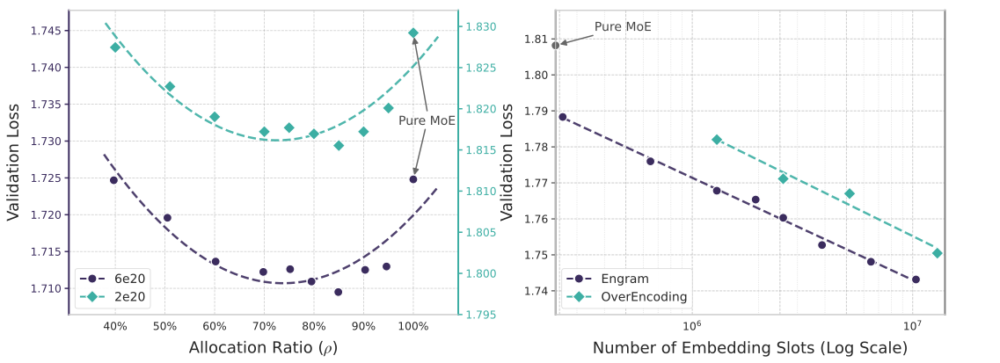
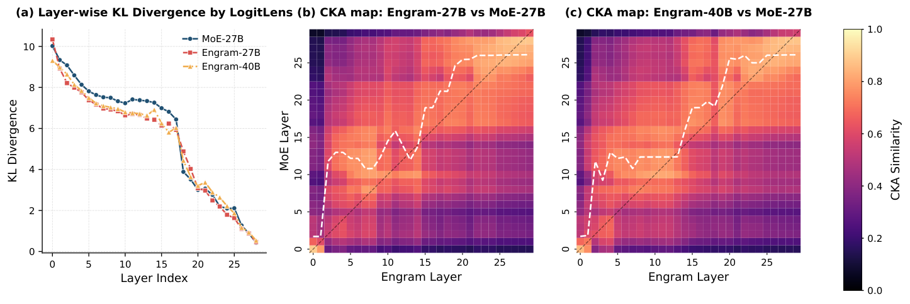
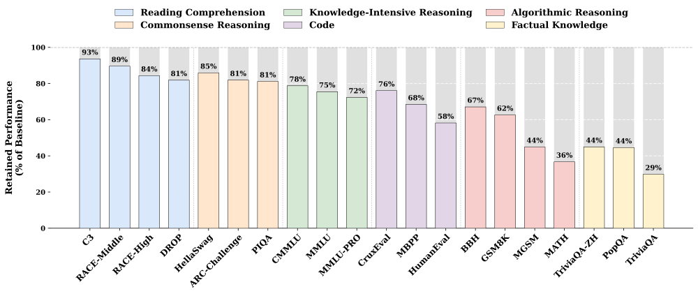

条件记忆：用可扩展的查表给大语言模型开辟一条新的稀疏维度
Conditional Memory via Scalable Lookup: A New Axis of Sparsity for Large Language Models
阅读状态、进度与收藏只保存在你的浏览器里。本页依据 arXiv v2（2026-07-12）；v2 与 v1（2026-01-12）的实验数字相同，v2 增补了作者和相关工作。
逐节精读
这部分按论文的章节顺序，用本站自己的话把整篇论文从头讲一遍。读懂某个概念需要的背景知识，会在第一次用到它之前单独讲清楚（青色框）。每个结论都尽量说出“因为什么、所以什么”。论文以 CC BY 4.0 发布，原图放在讲到它的地方，并说明这张图怎么看；原图没画到的概念，用本站的示意图补上。标“推算”的数字是本站根据论文数据算出来的，不是论文原话。每节末尾有英文原文的链接。
0 导读：这篇论文解决什么问题
今天的大模型几乎都用混合专家（Mixture-of-Experts，MoE）来扩大参数量。它的思路是：模型里放很多个“专家”网络，但每个 token 只挑其中几个来算。于是总参数可以很大，每个 token 花的计算量却基本不变。这种“按输入决定用哪部分参数来计算”的做法，叫条件计算。
这篇来自 DeepSeek 和北京大学的论文指出，语言里有一大类内容其实不需要“算”，只需要“查”：人名、地名、固定搭配、成语、代码里的惯用写法，这些东西在文本里反复以同样的样子出现，看到前两三个 token 基本就能确定是什么。而 Transformer 没有“查表”这个基本操作，只能靠前几层的注意力和前馈网络，把这些固定组合一点一点“拼”出来，相当于每次运行时都重新构造一张本来可以直接存下来的表。作者因此给模型加了一个查表模块 Engram：用当前 token 和它前面一两个 token 组成的短片段（N-gram）做钥匙，经过哈希直接从一张巨大的表里取出几行向量，再由一个门控决定这份记忆用多少。取一行向量几乎不需要乘法，所以这张表可以做得很大而不增加计算量。作者把这叫做条件记忆，并把它看作和 MoE 并列的另一条稀疏维度。
论文的主要发现有四条。第一，在总参数和每 token 计算量都固定的前提下，把原本给 MoE 专家的参数挪出大约 20%–25% 给 Engram，验证损失最低；全给专家或全给查表都更差，损失随分配比例呈 U 形。第二，在 27B 总参数、3.8B 激活参数、262B 训练 token 的对照里，Engram-27B 在几乎所有基准上超过参数和计算量都相同的 MoE-27B，而且推理、代码、数学的提升（如 BBH +5.0）比知识类（如 MMLU +3.0）还大。第三，长上下文检索明显变好（多查询“大海捞针”从 84.2 到 97.0）。第四，因为查表用的地址只取决于输入 token，系统可以在模型还没算到那一层之前就把需要的行从 CPU 内存里取过来；把一张 1000 亿参数的表整张放在主机内存里，推理吞吐只下降不到 3%。
读完这部分，你应该能回答这几个问题：
- “条件计算”和“条件记忆”分别是什么，查表为什么几乎不花计算、却很占内存？
- Engram 怎么把一段 token 变成表里的地址，哈希冲突怎么处理，门控起什么作用？
- 参数总量固定时，专家和查表各该分多少？这条 U 形曲线是在多大规模上测的？
- 27B 的对照实验里，哪些量是严格对齐的，哪些没有对齐？+3、+5 这样的提升有多大份量？
- 为什么说 Engram 让网络“等效变深”，这个说法的证据有多强？
- 为什么 Engram 的表能放到 CPU 内存里预取，而 MoE 的专家不行？“吞吐只降 3%”是在什么条件下测的？
- DeepSeek 后来的模型有没有真的用上它？
1 引言：语言里既有要“算”的部分，也有只需要“查”的部分
普通的 Transformer 每一层有一个前馈网络（FFN），每个 token 都要经过它的全部参数。MoE 把这个 FFN 换成很多个小 FFN（专家），再加一个路由器：路由器看当前 token 在这一层的隐藏状态，给每个专家打分，只选分数最高的 \(k\) 个专家来算。DeepSeek 的做法（DeepSeekMoE）还额外有几个“共享专家”，每个 token 都会经过它们；本站的 DeepSeek-V3 精读对此有详细讲解。
这样一来就要区分两个数。总参数是模型里所有参数的数量，决定模型要占多少存储。激活参数是处理一个 token 时真正参与了计算的参数，决定计算量：一个 token 前向时每个激活参数大约要做一次乘加，也就是 2 次浮点运算。以本文的 MoE-27B 为例，总参数 26.7B，激活参数 3.8B，每个 token 只用到全部参数的约 14%（推算）。没被选中的专家参数“存着但没用”，它们就是稀疏性带来的“免费”容量。
关键的一点是：路由器要等这一层的隐藏状态算出来之后，才知道该用哪几个专家。也就是说，MoE 用哪部分参数，是在运行时由中间结果决定的。这一点在第 2.5 节讲系统设计时会变得很重要。
作者认为，语言里很大一部分内容是局部的、静态的、高度程式化的：命名实体（“Alexander the Great”）、固定搭配（“By the way”）、成语和专有名词（“四大发明”“张仲景”）。这类内容只看最近几个 token 就能确定，所以经典的 N-gram 语言模型用查表就能很好地捕捉它们。可是标准 Transformer 里没有查表这个操作，模型只能用前几层的注意力和 FFN 去“合成”这些模式。
论文引用了一个可解释性研究（Patchscopes，Ghandeharioun 等，2024）的例子来说明这一点。模型读到 “Diana, Princess of Wales” 时，研究者把最后一个 token “Wales” 在每一层的内部表示翻译成文字，结果发现：第 1–2 层它还只代表“英国的一个地区”，第 3 层是“欧洲的一个国家”，第 4 层变成“女性君主或王后的头衔”，第 5 层是“威尔士亲王妻子的头衔”，直到第 6 层才变成“戴安娜王妃这个人”。也就是说，模型花了五六层的计算，才把一个人人都知道的固定实体拼出来（原文表 3）。作者把这称为“用计算模拟检索”：本来查一次表就能得到的东西，模型在每次推理时都要花宝贵的层数重新构造一遍，而这些层数本可以留给更难的推理。
基于这个观察，作者提出在条件计算之外再加一条稀疏维度：条件记忆。条件计算用稀疏激活的参数处理动态的逻辑；条件记忆用稀疏的查表操作，取出存放固定知识的静态向量。作为第一次尝试，他们回到了一个很老的结构：N-gram 嵌入。用最近几个 token 组成的片段当钥匙，在一张巨大的嵌入表里做常数时间的查找。作者说，单纯照搬这个老结构效果并不好，必须配上几项现代化的改造：分词器压缩、多头哈希、上下文门控、与多分支残差结构的结合（第 2 节逐一讲）。这个模块就叫 Engram（心理学里指“记忆痕迹”）。

为了说清楚两种稀疏怎么配合，作者提出了稀疏分配问题：总参数固定时，应该分多少给 MoE 专家、多少给 Engram 的表？实验发现验证损失随分配比例呈 U 形（第 3 节）。按这个规律把 Engram 放大到 27B 总参数后，它在知识类任务上提升明显（MMLU、CMMLU），在推理、代码、数学上提升更大（BBH、HumanEval、MATH）。作者用 LogitLens 和 CKA 两种分析工具解释原因：Engram 替浅层承担了拼接静态模式的工作，相当于让网络变深（第 6.1 节）；又因为局部依赖交给了查表，注意力可以更专注于全局上下文，长上下文检索因此变好（第 5 节）。最后，Engram 的查表地址是确定的，可以在运行时从主机内存预取，把计算和通信重叠起来；把 100B 参数的表放到主机内存，额外开销小于 3%（第 6.4 节）。
- “条件记忆”不是检索增强生成（RAG）。Engram 的表是模型自己的参数，在预训练时和其他参数一起学出来，不是一个外部文档库；它的“钥匙”是固定的 N-gram 哈希，不是模型学出来的查询向量。
- “O(1) 查表”说的是每个 token 的查表开销不随表的大小增长，不是说表不花资源：表越大，占的内存越多。论文的系统设计（第 2.5 节）正是为了把这份内存从昂贵的 GPU 显存挪到便宜的主机内存。
2 架构：Engram 怎么把一段 token 变成一份记忆
2.1 总览：先“取”，再“融”
设输入序列是 \(X=(x_1,\dots,x_T)\)，第 \(\ell\) 层的隐藏状态是 \(\mathbf{H}^{(\ell)}\in\mathbb{R}^{T\times d}\)（\(T\) 个位置，每个位置一个 \(d\) 维向量）。Engram 对每个位置 \(t\) 做两件事：第一步是检索，取出这个位置结尾的几个短片段，经过压缩和哈希，从表里取出静态的嵌入向量（2.2 节）；第二步是融合，用当前的隐藏状态给取出的向量打一个门控分，再经过一个轻量卷积，加回残差流（2.3 节）。之后这一层照常做注意力和 MoE。
2.2 用哈希 N-gram 做稀疏检索
N-gram 就是连续 \(N\) 个 token 组成的片段。在句子 “Alexander the Great” 里，以 “Great” 结尾的 2-gram 是（the, Great），3-gram 是（Alexander, the, Great）。经典的 N-gram 语言模型就是统计“某个片段后面通常跟什么”，用的是查表，不是神经网络计算。
嵌入表是一个 \(V\times d\) 的矩阵，每一行是一个向量。“查表”就是给定一个行号，把那一行读出来。读一行不需要任何乘法，代价只是从内存里读 \(d\) 个数。对比一下同样参数量的矩阵乘层：一个 token 经过它时，每个参数都要参与一次乘加。所以，一张有 57 亿参数的表和一组有 57 亿参数的专家，存储代价一样大，但每个 token 的计算代价完全不同：表只读固定的几行，专家被选中时要做上千万次乘加。
拿 Engram-27B 算一下（推算）：它的 Engram 表共 5.7B 参数，如果按 BF16（每个数 2 字节）存储约 11.4 GB（论文没写表的存储精度）；每个 token 在每个 Engram 层只读 1280 个数，两层合计 2560 个数，约 5 KB。作为对照，MoE-27B 每层有 72 个路由专家，Engram-27B 把它减到 55 个，省下的 17 个专家（在 29 个 MoE 层上）换成了 5.7B 的表，由此推算一个专家约 1,160 万参数，被选中时每个 token 要为它做约 2,300 万次浮点运算。
所以查表的问题不在计算，而在存储：表越大越占内存。另外，它每次只读零散的几小行，是典型的随机小块访问，内存带宽很难用满。推荐系统里的大嵌入表（上亿个用户或商品编号）早就面对过同样的问题，论文 v2 的相关工作专门讨论了这层联系。
第一步：分词器压缩。现代的子词分词器追求“能把文本无损还原”，所以同一个词的不同写法会得到不同的编号，比如 “Apple” 和 “␣apple”（带前导空格的小写）是两个 token。对 N-gram 查表来说，这会把同一个模式拆散到不同的行里，浪费容量。作者因此预先算好一个满射 \(\mathcal{P}:V\to V'\)，按规范化后的文本把等价的 token 合并成同一个编号：NFKC 规范化、转小写等。对 DeepSeek-V3 的 128k 分词器（实际 129,280 个 token），有效词表缩小了 23.43%（附录 C），即从 129,280 缩到约 99,000 个（推算）。附录 C 列出的合并最多的例子是：各种空白字符（制表符、换行、多个空格等 163 个 token）都并成一个空格；“a” 的各种大小写、带空格、带音调的写法（54 个 token）并成一个 “a”。官方演示代码里的规范化链是 NFKC → NFD → 去掉重音符号 → 转小写 → 合并连续空白。
压缩后，位置 \(t\) 的原始编号 \(x_t\) 变成 \(x'_t=\mathcal{P}(x_t)\)，以它结尾的 \(n\)-gram 记为 \(g_{t,n}=(x'_{t-n+1},\dots,x'_t)\)。Engram 只用 \(n\ge 2\) 的片段（单个 token 的信息已经由普通的输入嵌入提供）；主实验里最大阶数 \(N=3\)，即每个位置取一个 2-gram 和一个 3-gram。
第二步：多头哈希。把所有可能的 N-gram 都给一行是做不到的：压缩后约 9.9 万个编号，可能的 3-gram 就有约 \(10^{15}\) 种（推算）。所以作者沿用哈希的办法：用一个确定性的函数把任意片段映射成一个有限范围内的行号。为了减轻冲突，每种阶数 \(n\) 用 \(K\) 个不同的哈希头，第 \(k\) 个头把片段映射到一张大小为素数 \(M_{n,k}\) 的表 \(\mathbf{E}_{n,k}\) 里：
最后把所有阶数、所有头取出的向量拼接起来，得到这个位置的记忆向量：
这里的 \(\Vert\) 表示拼接。论文说哈希函数是一个轻量的“乘法–异或”哈希。官方演示代码给出了具体写法：每个位置的 token 编号乘上一个随机奇数，再把几个乘积按位异或，最后对每个头各自的素数取模。以 3-gram 为例：
同一阶数的 8 个头共用同一个 \(\text{mix}\)，但模数是 8 个互不相同的素数，所以落到的行号各不相同。每个 Engram 层用一组不同的随机乘数，两层之间的哈希也互相独立。
哈希把一个巨大的空间压进一个小空间，必然会有不同的片段落到同一行，这叫冲突。冲突的后果是：这一行的向量要同时为好几个不相干的片段服务，学出来的是它们的某种混合。
多头哈希的作用可以这样理解（本站的解释）：单看某一个头，两个指定的片段落到同一行的概率约是 \(1/M\)，对约 226 万行的表就是约 \(4\times10^{-7}\)；要让它们在 8 个头上同时冲突，概率约是这个数的 8 次方，可以忽略（推算，假设各头独立）。所以虽然每一行都被很多片段共用，但每个片段拿到的“8 行组合”几乎是独一无二的，拼起来的向量仍能区分它们。
但共用的程度并不低。假设训练数据里出现过 10 亿种不同的 3-gram（这是本站为说明数量级随便取的假设值，论文没有给），那么一张 226 万行的表平均每行要被约 440 种 3-gram 共用（推算）。好在自然语言的片段频率高度不均（齐夫分布，第 2.5 节还会用到）：一行的梯度更新主要来自最常落到它的那几个高频片段，低频片段的“噪声”要靠后面的门控来压制。
2.3 上下文门控：查到的东西和上下文不符时怎么办
注意力机制里，每个位置有一个查询向量 \(q\)（我想找什么）、键向量 \(k\)（我是什么）、值向量 \(v\)（我携带的内容）。\(q\) 和 \(k\) 的点积越大，说明越匹配。sigmoid 函数 \(\sigma(s)=1/(1+e^{-s})\) 把任意实数压到 0 到 1 之间，常用来做“开多大”的门。RMSNorm 把向量除以它各分量平方的均值的平方根，让向量长度稳定，避免点积因为向量太长而爆掉。
取出来的 \(\mathbf{e}_t\) 是一个和上下文无关的“先验”：同一个片段在任何句子里查到的都是同一个向量。这会带来两种问题。一是哈希冲突带来的噪声（上面讲过）；二是一词多义，同一个片段在不同语境下意思不同，比如“苹果发布”和“苹果削皮”里的“苹果”。作者借用注意力的思路做了一个门控：把当前位置的隐藏状态 \(\mathbf{h}_t\) 当作查询（它已经通过前面的注意力层看过了上下文），把记忆 \(\mathbf{e}_t\) 线性变换后当作键和值：
直观地说：如果查到的记忆和当前上下文对得上，点积大，\(\alpha_t\) 接近 1，记忆被放进来；如果对不上（冲突来的噪声，或者意思不符），点积小，\(\alpha_t\) 接近 0，记忆就被挡在门外。注意这里的门是一个标量，只决定整份记忆用多少，不在多个候选之间做选择，这和注意力在多个位置之间分配权重不同。
门控之后，作者再加一个很短的深度可分离因果卷积（每个通道单独卷，只看当前和之前的位置）。设 \(\tilde{\mathbf{V}}\in\mathbb{R}^{T\times d}\) 是所有位置门控后的值，卷积核长 \(w=4\)，空洞（dilation）\(\delta\) 取最大阶数（\(N=3\)），激活函数用 SiLU：
作者说加卷积是为了扩大感受野、增加非线性。空洞为 3、核长为 4 意味着：位置 \(t\) 的输出混合了位置 \(t\)、\(t-3\)、\(t-6\)、\(t-9\) 的记忆向量，而每个位置的记忆本身又覆盖了最近 3 个 token，所以合起来能“看到”最近约 12 个 token 范围内的局部模式（推算）。卷积参数初始化为 0，于是训练刚开始时卷积分支输出为 0，\(\mathbf{Y}=\tilde{\mathbf{V}}\)，不会扰乱训练。
最后，Engram 通过残差连接接入主干：\(\mathbf{H}^{(\ell)}\leftarrow\mathbf{H}^{(\ell)}+\mathbf{Y}\)，然后这一层照常做注意力和 MoE。Engram 不是每层都放，放在哪几层要同时照顾建模效果和第 2.5 节的系统延迟约束。主实验的 27B 模型放在第 2 层和第 15 层。
官方仓库只提供一个演示实现，注意力、MoE、多分支连接都是占位的，它的超参（隐藏维度 1024、每阶 512 维、插在第 1 和第 15 层，层号从 0 数）也不是论文模型的配置。和论文公式对照，有一处不同：代码在 sigmoid 之前先对点积分数取“带符号的平方根”，即 \(\alpha=\sigma\big(\mathrm{sign}(s)\sqrt{|s|}\big)\)，把大的分数压小，论文的公式 (4) 里没有这一步。其余部分（每个分支各自的 RMSNorm 与键投影、共享的值投影、卷积输出加回门控值）与论文一致。想复现论文数字时应以论文为准，但要知道两者有这处差别。
2.4 接入多分支残差结构（mHC）
标准 Transformer 只有一条残差流：每个子层的输出直接加回这条流。超连接（Hyper-Connections，HC）把残差流拓宽成 \(M\) 条并行的分支，各子层从这些分支里按可学习的权重读入、再按可学习的权重写回，让信息流动的方式更丰富。DeepSeek 的 mHC（Manifold-Constrained Hyper-Connections，arXiv 2512.24880，第一作者 Zhenda Xie 也是本文作者）把这些混合权重约束在一个特定的流形上，恢复残差连接“恒等映射”的性质，从而让训练在大规模下保持稳定。后来的 DeepSeek-V4 也用了 mHC，本站的 DeepSeek-V4 精读对它有更多介绍。
本文的所有模型默认都用 mHC（\(M=4\)）作为主干。Engram 本身不依赖具体的连接方式，但接到多分支上要做一点取舍：如果每个分支一套表，存储翻 4 倍；如果所有分支完全共用，又失去了分支各自的个性。作者的折中是：嵌入表和值投影 \(\mathbf{W}_V\) 所有分支共用，键投影每个分支一个。于是第 \(m\) 个分支有自己的门控：
这个设计在工程上还有一个好处：1 个 \(\mathbf{W}_V\) 和 4 个 \(\mathbf{W}_K^{(m)}\) 的输入都是同一个 \(\mathbf{e}_t\)，可以拼成一个大矩阵，用一次 FP8 矩阵乘法算完，GPU 利用率更高。按 \(d_{\text{mem}}=1280\)、\(d=2560\) 算，这 5 个投影矩阵每层约 1,640 万参数，两层约 3,300 万（推算），只占 3.8B 激活参数的不到 1%。第 6.2 节的消融显示，“每个分支各自门控”是三个最重要的设计之一。
2.5 系统效率：把存储和计算分开
一台 GPU 服务器里有几层存储。GPU 上的 HBM 显存带宽极高（H800 每秒约 3 TB 量级），但容量只有几十 GB（H800 是 80 GB）。CPU 那边的主机内存（DRAM）容量大得多，一台服务器常有 1–2 TB，价格也便宜得多，但 GPU 要通过 PCIe 总线去读它，PCIe 5.0 x16 的理论单向带宽约 64 GB/s，比显存慢两个数量级。再往下还有 NVMe 固态硬盘，容量更大、更慢。（这些是公开的硬件规格，不是论文的数字。）
把参数放到慢速存储上并不新鲜，难点在于延迟：如果要用的时候才去取，GPU 就得停下来等。唯一的办法是提前知道要用什么，在 GPU 忙着算前面的层时，把后面要用的数据先搬过来，这叫预取，让通信和计算重叠。
这正是 Engram 和 MoE 的根本区别。MoE 选哪个专家，要等这一层的隐藏状态算出来、路由器打完分才知道，所以专家参数没法提前搬，基本只能放在显存里。Engram 查哪些行，只取决于输入的 token 编号：序列一确定，所有 Engram 层要读的行号就都能算出来，和模型的中间结果无关。作者把这称为“确定性寻址”，并据此在训练和推理两个阶段做了不同的安排（原文图 2）：
- 训练时：用标准的模型并行把巨大的表按行切到所有 GPU 上。前向时用一次 All-to-All 通信，把每张卡需要的行从持有它们的卡上收集过来；反向时再用 All-to-All 把梯度发回各行的主人。这样表的总容量随 GPU 数量线性增长。
- 推理时：把表整个放到主机内存里。因为行号在前向开始前就已知，系统可以通过 PCIe 异步取回需要的行。为了把这段传输时间藏起来，Engram 不放在第 1 层，而是放在中间某层，让它前面那些层的计算充当“缓冲时间”。

| ① 如果专家放在主机内存（MoE）：选哪个专家要等第 2 层的路由结果 | ||||||||
| GPU：第 1 层 | ||||||||
| GPU：第 2 层路由 | ||||||||
| PCIe：搬专家参数 | ||||||||
| GPU：等待 | ||||||||
| GPU：第 2 层专家计算 | ||||||||
| ② Engram：token 一到就能算出行号，传输和第 1 层的计算重叠 | ||||||||
| CPU：算哈希、收集行 | ||||||||
| PCIe：搬记忆向量 | ||||||||
| GPU：第 1 层 | ||||||||
| GPU：第 2 层（含 Engram） | ||||||||
这里出现了一个“软硬件协同设计”的矛盾。从系统角度看，Engram 放得越深，前面可用来掩盖传输的计算就越多；但第 6.2 节的消融显示，从建模效果看，Engram 越早介入越好，因为它的任务就是替浅层分担局部模式的拼接。所以放在哪一层必须同时满足这两个约束。主实验的选择是第 2 层和第 15 层：第 2 层兼顾建模效果，只用 1 个块的计算来掩盖传输；第 15 层前面有十几层计算，掩盖起来很从容。
作者还提出一个更进一步的设计（论文没有实现和测试）：自然语言的 N-gram 频率服从齐夫分布，即极少数高频片段占了绝大多数的访问。所以可以做一个多级缓存：最常用的行放在显存或主机内存里，大量罕见片段的行放在更慢但容量更大的 NVMe 固态硬盘上。这样表可以扩到非常大，而平均访问延迟几乎不受影响。
- “确定性寻址”只对 Engram 的检索部分成立。门控要用到这一层的隐藏状态，必须在 GPU 上、在这一层里算，所以能提前做的只是“把行搬过来”。
- 多级缓存在本文只是一个设想。第 6.4 节的实验恰恰没有用任何缓存，所有行都从主机内存经 PCIe 读取。
- 训练时表仍然在 GPU 显存里（切到所有卡上），只是推理时才放到主机内存。所以“绕开显存容量限制”主要是推理侧的结论。
英文原文 §2 ↗ · 附录 A、C：超参与分词器压缩 ↗
3 缩放律与稀疏分配：专家和查表各分多少
3.1 总参数固定时：U 形的分配曲线
训练一个模型的计算量，常用一个经验公式估计：\(C\approx 6\,P_{\mathrm{act}}\,D\)，即每个 token 前向加反向大约要 6 倍激活参数的浮点运算，再乘以训练 token 数 \(D\)。所以给定计算预算 \(C\) 和激活参数 \(P_{\mathrm{act}}\)，训练 token 数也就定了。缩放律实验通常固定 \(C\)，比较不同设计谁的损失更低。
作者先定义三个量：
- \(P_{\mathrm{tot}}\)：可训练参数总数，不含词表嵌入和输出层；
- \(P_{\mathrm{act}}\)：每个 token 激活的参数，它决定训练成本（FLOPs）；
- \(P_{\mathrm{sparse}}=P_{\mathrm{tot}}-P_{\mathrm{act}}\)：不被激活的参数，也就是不增加计算的“免费”预算。对 MoE 来说是没被选中的专家，对 Engram 来说是没被查到的行。
在同一个计算预算下，\(P_{\mathrm{tot}}\) 和 \(P_{\mathrm{act}}\) 都固定，所以所有对比模型参数一样多、每 token 计算量一样多。再定义分配比例 \(\rho\in[0,1]\)：免费预算里分给 MoE 专家的比例。
\(\rho=1\) 就是纯 MoE；\(\rho\) 小于 1 时，减少路由专家的数量，把省下的参数变成 Engram 的行。拿主实验验算一下：Engram-27B 的 \(\rho=74.3\%\)。若 \(P_{\mathrm{tot}}\) 去掉约 0.66B 的嵌入和输出层后约为 26.0B，\(P_{\mathrm{sparse}}\approx 26.0-3.8=22.2\)B，Engram 的 5.7B 正好占其 25.7%，即 \(\rho\approx74.3\%\)（推算，嵌入和输出层按 129,280 × 2560 × 2 估计）。
实验在两个计算预算下进行，两者的稀疏比 \(P_{\mathrm{tot}}/P_{\mathrm{act}}\) 都约为 10：
| 计算预算 \(C\) | \(P_{\mathrm{tot}}\) | \(P_{\mathrm{act}}\) | 纯 MoE 的专家数 | 训练 token（推算，\(C/6P_{\mathrm{act}}\)） |
|---|---|---|---|---|
| \(2\times10^{20}\) | 约 5.7B | 568M | 106 | 约 59B |
| \(6\times10^{20}\) | 约 9.9B | 993M | 99 | 约 101B |
| 对照：主实验 | 26.7B | 3.8B | 72（+2 共享） | 262B（论文值），对应约 \(6\times10^{21}\)（推算） |
不同的 \(\rho\) 只通过改变路由专家的数量和 Engram 的行数来实现，训练流程和优化超参全部相同。

结果。两条曲线都呈 U 形。在 \(6\times10^{20}\) 的预算下，验证损失从纯 MoE（\(\rho=100\%\)）的 1.7248 降到 \(\rho\approx80\%\) 附近的 1.7109，差 0.0139。即使把 MoE 的份额砍到 \(\rho\approx40\%\)（5.7B 模型只剩 46 个专家，9.9B 模型只剩 43 个），损失也和纯 MoE 差不多。最优点的位置在两个预算下都稳定在 \(\rho\approx75\%\)–\(80\%\)，也就是把免费预算的 20%–25% 给 Engram。
作者对 U 形的解释是两者结构互补：靠近 100% 时，模型没有专门存静态模式的地方，只能用深度和计算去重建它们；靠近 0% 时，模型失去了条件计算能力，需要动态、依赖上下文推理的任务受损，这时记忆替代不了计算。
- 从原图看，U 形的“底”相当平：\(\rho\) 在 60% 到 95% 之间，各点的损失只差约 0.004–0.005，而且并不单调（相邻点之间有起伏）；最大的一跳发生在 95% 到 100% 之间（\(6\times10^{20}\) 预算下约 0.012）。所以更稳妥的读法是“只要分出一小部分给 Engram 就有明显收益，具体分 60% 还是 85% 差别不大”，而不是“最优点精确在 75%–80%”。（这是本站从原图读出的观察，论文没有给每个点的数值和误差。）
- “最优比例在两个规模下都稳定”只基于两个点，两者的稀疏比都固定为约 10，最大的才 9.9B 总参数、约 100B token（推算），比主实验小一个数量级的计算量。稀疏比更高（比如专家更多、更稀疏）时最优点会不会移动，论文没有测。
3.2 不限总参数时：查表越大，损失按对数线性下降
上一小节是在固定预算里分配；这一小节换个问法：既然 Engram 的表可以放到便宜的存储里，如果不限制总参数，一直加大表，会怎样？
实验用一个固定的 MoE 主干（\(P_{\mathrm{tot}}\approx3\)B，\(P_{\mathrm{act}}=568\)M，训练 100B token，作者说足以收敛），在它上面接一张 Engram 表，把槽位数 \(M\) 从 \(2.58\times10^{5}\) 扫到 \(1.0\times10^{7}\)，最多增加约 130 亿参数。按这个数，每个槽位约对应 1,300 个参数，和主实验 \(d_{\text{mem}}=1280\) 的规模一致（推算）。对照方法是 OverEncoding（Huang 等，ICML 2025）：它也用哈希 N-gram 嵌入，但只是把它们和输入层的词嵌入取平均。作者没有和 SCONE（Yu 等，NeurIPS 2025）比，因为后者是面向推理的，还要额外训练一个 f-gram 模型，没法放进严格等计算量的比较。
结果（原文图 3 右）：随着槽位增加，验证损失稳定下降，在对数横轴上是一条直线（幂律）。从图上读，Engram 从约 26 万槽位时的约 1.788 降到约 1000 万槽位时的约 1.743，没有 Engram 的主干是约 1.808。OverEncoding 也随表变大而变好，但在相同槽位数下始终比 Engram 差。作者的结论是：Engram 提供了一个可预测的“旋钮”，加大记忆就持续有回报，而且不需要额外计算。
4 大规模预训练：27B 的对照实验
4.1 实验设置：四个模型，严格对齐
所有模型用同一份 262B token 的语料，数据顺序也相同；分词器是 DeepSeek-V3 的（词表 129,280）。主干是 30 层 Transformer，隐藏维度 2560；每层用 32 个头的多头潜在注意力（MLA，见 DeepSeek-V3 精读），残差用扩展率为 4 的 mHC；主干参数用 Muon 优化器（见 Muon 精读）。附录 A 的其他超参：序列长度 4096，批大小 1280 条序列，训练 50,000 步（1280 × 4096 × 50,000 ≈ 262B token，推算），基础学习率 \(4\times10^{-4}\)，分段衰减的学习率计划，MoE 用无辅助损失的负载均衡，第 1 层是稠密层。
- Dense-4B（4.1B 总参数）：每层一个普通稠密 FFN。
- MoE-27B（26.7B 总参数）：把 FFN 换成 DeepSeekMoE，72 个路由专家加 2 个共享专家，每个 token 选 6 个路由专家。激活参数和 Dense-4B 相同，都是 3.8B。
- Engram-27B（26.7B 总参数）：从 MoE-27B 直接改出来，路由专家从 72 个减到 55 个，省下的参数变成 5.7B 的 Engram（\(\rho=74.3\%\)），总参数不变。Engram 插在第 2 层和第 15 层，最大阶数 3，8 个哈希头，维度 1280。嵌入表用 Adam 优化，学习率放大 5 倍，不加权重衰减；卷积参数初始化为 0。
- Engram-40B（39.5B 总参数）：主干和计算量与 Engram-27B 相同，只把 Engram 加大到 18.5B 参数，用来看继续加大记忆的效果。
评测覆盖语言建模（The Pile 测试集损失、和训练数据同分布的验证集损失）、知识与推理（MMLU 系列、CMMLU、C-Eval、AGIEval、ARC、TriviaQA、PopQA、CCPM、BBH、HellaSwag、PIQA、WinoGrande）、阅读理解（DROP、RACE、C3）和代码数学（HumanEval、MBPP、CruxEval、GSM8K、MGSM、MATH）。所有评测都是在预训练后的基座模型上用少样本提示做的，没有经过指令微调。
4.2 结果：推理和代码数学的提升比知识类还大
先看最大的差距：三个稀疏模型（MoE-27B、Engram-27B、Engram-40B）在所有基准上都远好于计算量相同的 Dense-4B，比如 MMLU 从 48.6 到 57.4 以上，GSM8K 从 35.5 到 58.4 以上。这和以往的结论一致：同样的计算量下，稀疏模型的缩放效率更高。
更重要的是 Engram-27B 和 MoE-27B 的比较，因为两者总参数、激活参数、训练数据全都一样，唯一的差别是 17 个专家换成了查表。语言建模损失：Pile 从 1.960 降到 1.950，验证集从 1.634 降到 1.622。下游任务的差距见下图：
几个值得注意的地方。第一，知识类任务确实有提升（MMLU +3.0、CMMLU +4.0、C-Eval +4.7、MMLU-Pro +1.8）。第二，作者特别强调，通用推理的提升更大（BBH +5.0、ARC-Challenge +3.7、DROP +3.3），代码和数学也有可观的提升（HumanEval +3.0、MATH +2.4、GSM8K +2.2）。这正是第 6 节要解释的现象：一个“查表”模块为什么能帮推理。第三，提升最大的是 CCPM（+7.5），这是一个中文古诗词匹配任务，大量依赖固定的词语搭配，正是 N-gram 查表擅长的东西。第四，一个有点反直觉的事实：纯事实问答的提升反而很小（TriviaQA +1.9、TriviaQA-ZH +1.5、PopQA 只有 +0.2）。第 6.3 节会看到，去掉 Engram 后这几项掉得最厉害，两件事放在一起才能读懂 Engram 在做什么（见那里的提示）。
Engram-40B 把表加大到 18.5B 后，预训练损失进一步降低（Pile 1.942、验证集 1.610），大多数基准也继续变好，比如 AGIEval 从 41.8 到 45.9、CruxEval-i 从 32.2 到 36.2、PIQA 从 73.5 到 76.5。但它并没有在所有任务上都超过 Engram-27B：HumanEval（38.4 对 40.8）、MBPP（46.2 对 48.2）、C3（61.8 对 63.6）反而更低。作者认为这是训练不足造成的：Engram-40B 和基线的训练损失差距到训练结束时还在扩大，说明更大的记忆在 262B token 内还没“填满”。
4.3 结果的份量：这些提升能说明什么
严格对齐的量。Engram-27B 与 MoE-27B 的总参数（26.7B）、每 token 激活参数（3.8B）、训练 token（262B，相同数据和顺序）、主干结构、训练步数全部相同，这是本文最有说服力的地方。很多此前的 N-gram 嵌入工作只在主干上“加”参数，不扣掉别的参数，因而分不清提升来自结构还是来自参数变多。本文用“拿专家换查表”的方式避免了这个问题。
近似对齐、但值得知道的量。
- 计算量：Engram 自身有 5 个投影矩阵和一个卷积，约 3,300 万激活参数（推算），约占 3.8B 的 0.9%。表 1 给的激活参数精确到 0.1B，这部分藏在四舍五入里。所以 Engram-27B 每 token 的计算量其实略多于 MoE-27B，但差别在 1% 以内，不足以解释几个点的提升。
- 优化器：Engram 的嵌入表用 Adam 和 5 倍学习率，主干用 Muon。这套设置是为 Engram 调过的；MoE 基线用同一条训练流程，论文没说是否为它单独调过超参。
- 内存与通信：“等参数”是按参数个数算的。实际部署时，专家参数和表参数的存放位置、通信方式完全不同（训练时表要做 All-to-All），所以“等参数”不等于“等硬件成本”。
没有对齐或没有报告的量。
- 随机性：每种配置只训了一次，没有多个随机种子，也没有误差范围。附录 B 的训练曲线是作者对噪声问题的回应。可以用一个具体数字感受噪声：HumanEval 只有 164 道题，+3.0 个百分点相当于多做对约 5 道题（推算）。
- Dense-4B 只和其他模型对齐了激活参数和训练 token，总参数小得多；它说明的是“稀疏比稠密好”，不是 Engram 的贡献。Engram-40B 只对齐了激活参数和 token，总参数多了 12.8B，它和 MoE-27B 的比较不是等参数比较。
- 规模：最大的对照是 3.8B 激活参数、262B token。生产级模型大一到两个数量级（DeepSeek-V3 是 37B 激活参数、14.8T token），提升在那个规模上是否保持，本文没有直接证据。
- 后训练：所有结果都是基座模型的少样本分数，经过指令微调和强化学习后差距会怎样，没有报告。
5 长上下文：把局部依赖交给查表，注意力去管全局
预训练通常用较短的序列（本文是 4096）。要让模型处理更长的文本，常见做法是预训练之后再用长文本继续训练一段，同时调整位置编码，让模型适应更远的位置，这叫上下文扩展。本文沿用 DeepSeek-V3 的做法，用 YaRN（一种修改 RoPE 旋转频率的方法，见 RoPE 精读）把上下文扩到 32768，再训练 5,000 步、共 30B token 的高质量长文本，YaRN 参数为 \(s=10,\alpha=1,\beta=32\)，缩放因子 \(f=0.707\)。
LongPPL 衡量模型在长文本上的困惑度（越低越好），它特别关注那些需要远处上下文才能预测准的 token。本文在四类长文本上测：长篇书籍、研究论文、代码仓库、长的思维链。RULER 是一组合成的长上下文任务：在很长的无关文本里藏一些“针”（比如一个键值对），让模型找出来，这就是“大海捞针”（NIAH）。它有单针（S）、多键（MK）、多值（MV）、多查询（MQ）几种变体；另外还有多跳变量追踪（VT）、常见词与高频词抽取（CWE、FWE）和问答（QA）。
怎么设计对比。作者先观察到一个现象：同一个 Engram-27B，从预训练的 41k 步、46k 步、50k 步三个检查点出发，做完全相同的长上下文扩展，结果随预训练步数增加而变好。这说明长上下文能力不仅取决于注意力和位置编码这些结构，也和基座模型本身的建模能力紧密相关。因此，公平的结构比较应该让两个模型的预训练损失对齐，而不只是让训练步数对齐。于是作者设了三种比较，基线都是训满 50k 步的 MoE-27B（预训练损失 1.63）：
- 等损失：Engram-27B 的 46k 步检查点，预训练损失也是 1.63。这个比较最能单独说明结构的作用。
- 等计算：Engram-27B 训满 50k 步（损失 1.62），和基线的预训练计算量相同。
- 极端设置：Engram-27B 的 41k 步检查点（损失 1.66），只用了基线 82% 的预训练计算量。
四个模型的长上下文扩展训练完全相同。结果如下（原文表 2，长度均为 32k）：
| 模型（预训练步数，损失） | LongPPL（越低越好） | RULER 大海捞针（越高越好） | RULER 其他任务 | |||||||||
|---|---|---|---|---|---|---|---|---|---|---|---|---|
| 书 | 论文 | 代码 | 长思维链 | S | MK | MV | MQ | VT | CWE | FWE | QA | |
| MoE-27B（50k，1.63） | 4.38 | 2.91 | 2.49 | 14.16 | 100.0 | 88.0 | 92.7 | 84.2 | 77.0 | 4.5 | 73.0 | 34.5 |
| Engram-27B（41k，1.66） | 4.37 | 2.92 | 2.50 | 14.26 | 99.6 | 88.3 | 93.0 | 89.5 | 83.2 | 3.8 | 99.6 | 44.0 |
| Engram-27B（46k，1.63） | 4.19 | 2.84 | 2.45 | 13.59 | 97.6 | 89.0 | 95.5 | 97.0 | 87.2 | 4.3 | 98.6 | 37.5 |
| Engram-27B（50k，1.62） | 4.14 | 2.82 | 2.44 | 13.41 | 99.3 | 89.3 | 96.5 | 97.0 | 89.0 | 5.9 | 99.3 | 40.5 |
结果。等损失时（46k），Engram 在复杂检索任务上明显更好：多查询大海捞针 97.0 对 84.2，变量追踪 87.2 对 77.0，四类 LongPPL 也都更低。等计算时（50k），差距进一步拉大，变量追踪到 89.0。只用 82% 预训练计算量的 41k 检查点，LongPPL 和基线基本持平（4.37 对 4.38 等），RULER 则多数更好，其中高频词抽取（FWE）从 73.0 跳到 99.6。作者据此认为 Engram 结构本身对长上下文有好处。
- “等损失”是一个有意思的设计，但它对齐的只是一个数（预训练损失），两个模型在其他方面并不等价。还有一个论文没讨论的变量：学习率计划是分段衰减（引用的是 DeepSeek LLM 的做法，那篇论文在训练进度 80% 和 90% 处两次降低学习率）。如果本文也是这样，41k 和 46k 两个中间检查点分别处在不同的学习率阶段，这本身就会影响后续扩展训练的效果。这一点是本站的推测，论文没写衰减点。
- 表 2 的说明写着“等损失和等计算两种设置下，Engram 在所有指标上都显著超过基线”，但表里并非如此：单针检索（S）基线是 100.0，Engram 46k 是 97.6、50k 是 99.3；CWE 上 46k 是 4.3，低于基线的 4.5。CWE 对所有模型都只有个位数，基本没有区分度。
- “长上下文能力随预训练步数单调提升”也只对部分指标成立：LongPPL、MQ、VT 是单调的，但 QA 是 44.0 → 37.5 → 40.5，单针检索和 FWE 也有起伏。这些合成任务的分数本身波动不小，每个设置只测了一次。
- “注意力容量被释放给了全局上下文”是一个解释，论文没有直接测量注意力模式（比如注意力有多少落在远处）来验证它。长度也只测到 32k。
6 分析：Engram 到底在模型里做了什么
6.1 Engram 等于把网络变深了吗
LogitLens 是一个看“模型在中间层想到哪了”的办法：把某一层的隐藏状态直接接上模型最后的输出层（LM Head），算出一个下一个 token 的概率分布，再和模型真正的最终输出分布比较。比较用 KL 散度，它衡量两个分布有多不一样，越小说明这一层的表示越接近“可以直接给出最终答案”。如果一个模型的 KL 在浅层就降得很低，说明它更早地完成了特征组合。
CKA（Centered Kernel Alignment）衡量两组表示的结构有多相似。拿同一批输入，分别取模型 A 第 \(i\) 层和模型 B 第 \(j\) 层的激活 \(X\)、\(Y\)，算出它们的格拉姆矩阵 \(K=XX^{\top}\)、\(L=YY^{\top}\)（描述“这批样本两两之间有多像”），再用 HSIC（一种衡量两个矩阵相关程度的统计量）归一化：
结果在 0 到 1 之间，越接近 1 说明两层“看待这批样本的方式”越一致。如果 Engram 模型的第 5 层和 MoE 模型的第 12 层最像，就可以说 Engram 模型在第 5 层已经达到了 MoE 模型第 12 层的表示水平。
LogitLens 的结果。作者对每一层算 KL 散度（原文图 4a）。和 MoE 基线相比，两个 Engram 模型的 KL 系统性地更小，差距在前面的层里最明显。作者的解读是：Engram 模型更快地完成了特征组合，更早地得到“可以直接用来预测”的表示。
CKA 的结果。作者在 Few-NERD（一个命名实体数据集）上，取每个命名实体最后一个 token 的隐藏状态，算出 Engram 模型各层和 MoE 模型各层两两之间的 CKA 相似度矩阵 \(S\)。为了把“Engram 第 \(j\) 层对应 MoE 第几层”变成一个数，作者定义了软对齐指数：取和 Engram 第 \(j\) 层最相似的 5 个 MoE 层，按相似度加权平均它们的层号：
如果 \(a_j>j\)，说明 Engram 的第 \(j\) 层对应 MoE 更深的层。结果是在很大一段层范围内都有 \(a_j>j\)。例如，Engram-27B 第 5 层的表示，和 MoE 基线约第 12 层的表示最接近。作者据此得出本文的核心解释：通过显式查表绕过浅层的特征组合，Engram 在功能上等价于增加了模型的有效深度。

论文开头的“戴安娜王妃”例子在这里闭环了：普通模型要用五六层才能把一个实体拼完整，而 Engram 在第 2 层就把“以这几个 token 结尾的固定片段”对应的向量直接送进了残差流，于是后面的层可以从一个更“成熟”的表示开始工作。
- CKA 只在命名实体的最后一个 token 上计算，这恰好是 Engram 最该起作用的位置。在普通 token 上（比如推理过程中的中间步骤），“等效加深”是否同样明显，论文没有测。
- “表示相似”不等于“做了同样的计算”。CKA 说明 Engram 第 5 层和 MoE 第 12 层“看样本的方式”接近，但不能证明 Engram 模型把省下的层数用在了推理上。LogitLens 的差距也主要出现在前半部分，到最后几层三个模型几乎一样。
- 所以“查表帮了推理”的因果链（省下浅层 → 多出有效深度 → 推理变好）是一个合理且有一定证据的解释，但每一环的证据强度不同，最后一环（推理变好是因为多出了深度）没有直接检验。
6.2 结构消融：哪些设计重要，放在哪层最好
消融在一个较小的受控设置下做：主干是 12 层、3B 总参数、0.56B 激活参数的 MoE，训练 100B token，验证损失 1.808。在它上面加一个固定 1.6B 参数的 Engram 作为参考配置：用 2-gram 和 3-gram，插在第 2 层和第 6 层，验证损失 1.768，比基线好 0.04。下面所有变体都和这个参考配置比，Engram 的参数预算始终保持 1.6B。

插在哪一层：一个取舍。插得早，Engram 能在主干花掉计算深度之前就接手局部模式的拼接，这符合网络“浅层处理局部、深层处理抽象”的自然分工。但插得早也有代价：浅层的隐藏状态还没通过注意力聚合足够的上下文，用它做门控的查询不够准；多分支结构里各分支在浅层也还没分化，分支各自门控的优势发挥不出来。层扫描的结果是第 2 层最好（1.770），比第 1 层好，往深处逐渐变差。作者的解读是：经过一轮注意力，隐藏状态已经足以给门控当查询；同时第 2 层又足够浅，能替代主干底层的局部聚合。
拆成两个模块更好。把同样 1.6B 的预算拆成两个较小的模块（减小每个模块的维度 \(d_{\text{mem}}\)），分别放在第 2 层和第 6 层，损失进一步降到 1.768。这种分层设计调和了上面的矛盾：早的模块负责尽早介入，晚的模块享有更丰富的上下文来做门控。它还有系统上的好处：第 6 层前面有更多计算可以掩盖传输延迟，正好对应第 2.5 节的内存层级设计。
哪些成分重要。伤害最大的三项是：去掉多分支各自的融合（改成在 mHC 的输入映射之后只做一次融合）、去掉上下文门控、去掉分词器压缩。去掉短卷积只让损失略微变差。把一部分容量分给 4-gram 反而略差，作者推测是因为在固定的 1.6B 预算下，这稀释了更高频的 2-gram 和 3-gram 的容量；但他们也没有排除在更大的记忆规模下高阶 N-gram 会变得有用。（后来 DeepSeek-V4.1-Flash 在每个模块约 98B 参数的规模上确实用了 {2, 3, 4} 阶，见“后来怎么样了”。）
6.3 关掉 Engram 会怎样：事实知识塌了，阅读理解基本还在
为了看清 Engram 承担了什么功能，作者在推理时把 Engram 的输出完全置零，主干保持不变，测量每个基准还剩多少原来的分数。作者也承认，这种“训练时有、测试时突然没了”的做法会造成训练与推理不一致，在需要多种能力配合的复杂任务上会引入噪声，所以重点看敏感性谱的两个极端：事实知识和阅读理解。

结果呈现出鲜明的两极。事实知识类基准几乎崩溃，只保留原来的 29%–44%（TriviaQA 只剩 29%），说明 Engram 成了模型存放参数化知识的主要仓库。阅读理解类则非常稳健，保留 81%–93%（C3 保留 93%），说明这类“答案就在给定文本里”的任务主要依赖主干的注意力，而不是 Engram。
6.4 系统效率：把 1000 亿参数的表放在主机内存里
Engram 对路由式 MoE 的一大系统优势是：它的稀疏激活由显式、静态的哈希编号决定，访问模式完全确定，下一次查表要用的行号在 token 序列确定时就已固定，可以在对应的层执行之前算好。作者用实验检验了“放到主机内存 + 预取”到底有多少开销。
实验设置。推理框架是基于 nano-vLLM 搭的（一个精简版的 vLLM 原型，vLLM 本身见 vLLM 精读）。为了得到干净的延迟基线，避免 MoE 专家并行带来的通信干扰，他们用了两个稠密主干：Dense-4B 和 Dense-8B。在第 2 个 Transformer 块里插入一个 1000 亿参数的 Engram 层，整张表放在主机内存里。推理时系统异步预取这一层要用的嵌入，让 PCIe 传输和第 1 个块的计算重叠。硬件是 NVIDIA H800，负载是 512 条序列，长度在 100 到 1024 之间均匀分布。
结果。把 1000 亿参数的表整个放在主机内存里，吞吐最多只下降 2.8%（8B 主干）。作者的解释是：前面稠密块的计算量足够大，提供了足够的时间窗口来掩盖取数延迟；而且每一步实际要传输的数据量只和被查到的行数有关，和整张表有多大无关。作者还强调这是一个保守的基线：第 2.5 节设想的多级缓存会把高频的行缓存在显存里，而这个实验强制所有读取都走 PCIe，所以一个充分优化、利用局部性的实现开销会更小。
- 测的是什么：这是一个纯开销测试。基线是没有 Engram 的稠密模型，所以它只说明“多挂一张放在主机内存里的大表要付出多少吞吐”，不涉及模型质量；这个 100B 的 Engram 模型也没有训练过（论文没有说表里是什么值，但开销与值无关）。
- 和论文的主模型不同：主模型是 MoE（Engram-27B），这里是稠密主干，而且只有一个 Engram 层、放在第 2 块。作者说选稠密主干是为了避开专家并行通信的干扰；但真实的 MoE 部署里，PCIe 和网卡带宽可能还要分给专家通信，开销会不会仍然这么小，没有测。
- 指标：只有总吞吐（token/秒），没有首 token 延迟、每 token 延迟、P99 尾延迟；没说吞吐里预填充和解码各占多少，也没说 100–1024 指的是输入长度还是输出长度。批很大（512 条）时计算时间长，最容易藏住传输；小批量、低延迟的场景下掩盖窗口更短，结果可能不同。
- 没有披露：主机内存容量和带宽、PCIe 代数、表的存储精度、CPU 端怎么做哈希和收集行。按 BF16 估算，100B 参数的表要占约 200 GB 主机内存（推算）。nano-vLLM 也不是生产级引擎，基线本身的效率与 vLLM 或 SGLang 有差距。
6.5 门控可视化：门在什么时候打开
最后，作者把 Engram-27B 的门控值 \(\alpha_t\) 画了出来，检验门控是否按设计工作。需要说明的是：这个模型用 mHC（4 个分支）且 Engram 插在第 2 和第 15 层，所以每个 token 有 8 个门控值。作者在脚注里说明并不是每个分支的门都有可解释的模式，图里展示的是和“语义模式匹配”相关性最强的那一个。

作者的总结是：门控在局部的、静态的模式完成时被一致地激活，英文里是多 token 的命名实体和固定短语，中文里是成语式的表达和历史人物名，说明 Engram 确实在识别和处理这些程式化的依赖，替 Transformer 主干分担了记忆这些静态关联的负担。
7–8 相关工作与结论：Engram 在哪些前人工作之上
论文把相关工作分成五类，本站把它们和 Engram 的关系整理如下。
- N-gram 建模与嵌入扩展。N-gram 模型可以追溯到香农，传统上用平滑技术处理数据稀疏；神经网络时代，FastText 保留了 N-gram 查表的高效。近期“扩展嵌入表”重新流行：Gemma 3n 的 Per-Layer Embeddings、STEM、L3、DeepEmbed 用巨大的表扩充容量；更接近本文的一支把 N-gram 结构直接放进表示空间：N-Grammer、SuperBPE（把多词表达合并成“超级词”）、SCONE（用一个辅助模型给高频片段编码）、OverEncoding 和 Byte Latent Transformer（BLT，分别在 token 级和字节级用哈希 N-gram 嵌入）。
- 高基数类别嵌入。这是 v2 新增的一类。推荐系统要给数以亿计的用户、商品编号学嵌入，发展出了多重哈希、按频率分配容量、冷热分层、量化压缩等一整套技术。Engram 面对的是同类问题（巨大的离散键空间、高度偏斜的访问分布），区别在于它的键是有序的文本 N-gram，查到的向量通过门控注入 Transformer 的中间层。
- 混合专家。从 Shazeer 等人的稀疏门控 MoE，到 GShard、Switch Transformer、GLaM，再到 DeepSeekMoE 的细粒度专家和共享专家，以及 DeepSeek-V3、Kimi K2 这样的数千亿参数模型。
- 记忆网络。参数化的记忆（PKM、PEER、UltraMem 等）在模型层里放大规模的稀疏键值存储；非参数化的记忆（REALM、RETRO、PlugLM 等）把知识放在外部可编辑的存储里。
- 知识存储机制。可解释性研究认为 FFN 像键值记忆：第一层识别模式（键），第二层把对应信息写回残差流（值）；“知识神经元”、因果追踪，以及基于这些发现的模型编辑方法 ROME、MEMIT 都属于这一支。（本文作者之一 Damai Dai 正是“知识神经元”论文的第一作者。）
| 方法 | 怎么决定读哪几行 | 放在哪一层 | 能否在算到那一层之前预取 |
|---|---|---|---|
| PKM / UltraMem 类参数化记忆 | 用隐藏状态算查询，再在学到的键里找最近的 | 中间层 | 不能：查询依赖运行时的隐藏状态 |
| OverEncoding 等输入层 N-gram 嵌入 | 输入 token 的哈希 | 第 0 层（和词嵌入合并） | 能，但没有前面的计算可以掩盖延迟，只能串行 |
| Engram | 输入 token 的哈希 | 中间层（如第 2、15 层） | 能，且前面各层的计算正好用来掩盖传输 |
本站整理的对比表。“能否预取”一栏是按各方法的寻址方式推出来的，论文只明确讨论了输入层嵌入“把访存和计算串行化”这一点。
作者认为本文和前人的区别主要有两点。第一是评测协议：以前的方法常把 N-gram 嵌入当作外挂，没有在严格公平的条件下验证效率；比如 SCONE 面向推理、需要额外训练计算，OverEncoding 即使在不等参数的条件下也没能在稀疏 MoE 主干上带来实质提升。本文则把条件记忆当成一等公民，在稀疏分配框架下与严格等参数、等计算的 MoE 比较。第二是系统视角：已有方法都把嵌入放在输入层（第 0 层），访存和计算只能串行；Engram 把记忆注入较深的层，从而能让通信和计算重叠，再加上利用 N-gram 的齐夫分布来使用硬件的存储层级。
结论。论文把条件记忆定位为与条件计算（MoE）互补的稀疏维度，目的是解决“用动态计算模拟知识检索”的低效。它用 Engram 这个现代化的 N-gram 嵌入模块实现了常数时间的静态模式查表；通过稀疏分配问题发现了 U 形缩放律，混合分配严格优于纯 MoE；放大到 27B 后在各领域都有提升，而且推理、代码、数学的提升比知识类更大。机理分析显示 Engram 通过替浅层卸下静态重建的任务，相当于加深了网络，也让注意力能专注于全局上下文，因而长上下文能力明显提升。最后，确定性寻址让存储和计算可以分离，巨大的参数表可以放到主机内存，推理开销可以忽略。作者预期条件记忆会成为下一代稀疏模型不可缺少的建模原语。
后来怎么样了
论文 2026 年 1 月 12 日上传 arXiv，同日开源了演示代码；正式版发表于 ACL 2026 长文（Proceedings 第 4968–4990 页，Anthology 编号 2026.acl-long.226）。截至 2026-10，有三件事值得知道。
DeepSeek-V4 没有用，DeepSeek-V4.1-Flash 用上了
2026 年 6 月的 DeepSeek-V4 技术报告（arXiv 2606.19348）的架构里没有 Engram。报告的结论部分把“沿新的维度探索模型稀疏性，比如更多的稀疏嵌入模块”列为未来方向，引用的正是本文。V4 采用了本文主干里已经出现的 mHC 和 Muon。
2026 年 9 月的 DeepSeek-V4.1-Flash（arXiv 2609.19969）则正式集成了 Engram，这是本文方法第一次出现在 DeepSeek 发布的大模型里。根据它的技术报告：
- 规模：552B 主干参数之外另有 196B Engram 参数，平均分给两个模块，放在第 1 和第 14 层（从 0 数）。每个模块用 {2, 3, 4} 三种阶数、每阶 8 个哈希头、每阶总维度 2048，每个头的表约 1,600 万行，表大小取互不相同的素数。按这些数验算：3 阶 × 8 头 × 约 1,600 万行 × 256 维 ≈ 98B 每模块，两个模块约 196B，和报告一致（推算）。注意这里用了本文在 1.6B 小预算下觉得“略亏”的 4-gram，与本文“记忆更大时高阶可能有用”的保留意见相符。
- 改动：去掉了短因果卷积，理由是它带来的收益抵不上在推理系统里增加的复杂度（本文消融里它也只是“略有帮助”）；嵌入表和投影层都用 FP8；嵌入表不再用 Adam，而是用“动量更新 + Sinkhorn 归一化”，因为给这么大的表配 Adam 的优化器状态太占内存；Engram 学习率仍放大 5 倍。
- 系统：训练时嵌入表按行切到专门的“engram 并行”进程组上，查表预取在每个流水线阶段开始处理微批之前对整个本地批次一次性发起，梯度在反向结束后发回；推理时利用确定性寻址，通过后台 RDMA 从主机内存预取，第一个模块的预取和第一个 Transformer 块的计算重叠；强化学习采样时，表则常驻 GPU 显存，以减轻主机内存压力。
- 没有公开的：报告里没有找到单独去掉 Engram 的对照实验，所以 Engram 在这个规模上具体贡献多少，外界仍无法量化。
放在 DeepSeek 的技术脉络里看：注意力这条线是 MLA（V2/V3）→ NSA 与 V3.2 的 DSA（V3.2 精读）→ V4 的 CSA/HCA → V4.1-Flash 的 KV 缓存压缩，目标是让长上下文更便宜；FFN 这条线是 DeepSeekMoE 的条件计算。Engram 不属于这两条线中的任何一条，它是在“参数怎么用”这件事上新开的一条维度：不改注意力，也不改专家，而是另外加一张只查不算的表。本站的 DeepSeek-V3 硬件反思精读讨论了这家公司“为硬件设计模型”的思路，Engram 的确定性寻址正是这种思路的一个例子。
后续研究：Lngram
2026 年 5 月的 Lngram（Zheng 等，arXiv 2605.24869）直接以 Engram 为对照。它指出 Engram 的键绑在分词器的 token 编号和哈希压缩上，于是改为从隐藏状态学出离散符号，再在这些符号上做 N-gram 查表；这样就不依赖分词器，也能用到图像等非文本模态。作者报告它在所评测的设置下优于 Transformer 和 Engram 基线，并同样用 LogitLens 和 CKA 观察到“有效深度增加”。需要注意（本站的分析）：键从隐藏状态算出，就失去了 Engram “在算到那一层之前就知道读哪几行”的性质，第 2.5 节那种主机内存预取会更难做。截至 2026-10，本站没有找到对 Engram 主结果的独立复现。
代码
官方仓库 deepseek-ai/Engram（Apache-2.0）只有一个约 400 行的演示脚本、论文 PDF 和插图源文件，注意力、MoE、mHC 都是占位实现，没有训练代码、没有预训练权重、也没有本文的推理系统；仓库在 2026-01-14 之后没有更新。所以本文的主实验目前无法由外部直接复现。
作者
单位按论文署名（arXiv v2）。背景只列可公开查证的信息：论文本身、arXiv 上的署名、机构页面。
影响力
- 引用：见页首（Semantic Scholar 快照）。
- 发表：ACL 2026 长文（第 64 届计算语言学年会，Proceedings Volume 1: Long Papers，第 4968–4990 页，2026.acl-long.226）。ACL 版的署名是 v1 的 14 位作者。
- 开源：deepseek-ai/Engram 仓库 4,766 个 star、363 个 fork（截至 2026-10-20），Apache-2.0 许可，创建于 2026-01-12；内容为演示代码，不含训练代码与权重。
- 采用：DeepSeek-V4.1-Flash（arXiv 2609.19969，2026-09）集成了 196B 参数的 Engram；DeepSeek-V4（2026-06）未采用，但在结论中把稀疏嵌入模块列为未来方向。
- 后续研究：Lngram（arXiv 2605.24869）以 Engram 为基线，把查表的键从 token 编号换成从隐藏状态学出的离散符号。
延伸阅读
- DeepSeek-V3 精读：MLA、DeepSeekMoE 与无辅助损失负载均衡，即本文的主干和 MoE 基线。
- DeepSeek-V4 精读：mHC 与 Muon 在旗舰模型上的使用；DeepSeek-V4.1-Flash 精读：Engram 第一次进入 DeepSeek 发布的模型。
- NSA 精读、DeepSeek-V3.2（DSA）精读：DeepSeek 在注意力这条线上的稀疏化，可与本文的“参数稀疏”对照。
- Muon 精读：本文主干使用的优化器。
- Mooncake 精读、KV 缓存分层存储（旧版拆解）：同样是把数据放到主机内存或 SSD、按需取回，只是对象是 KV 缓存。
- DeepSeek-V3（旧版结构拆解）、DeepSeek-V4（旧版结构拆解）。
- 返回论文书架
本页是对论文的中文精读笔记，正文为本站撰写，并非翻译。数字与结论以原文为准：arXiv:2601.07372（v2）。原文图 1–8 取自 arXiv HTML 版，论文以 CC BY 4.0 许可发布，作者为 Xin Cheng 等（DeepSeek-AI、北京大学）；图片未做修改，仅更改了文件名。“论文 vs 官方代码”一段参考的是 Apache-2.0 许可的官方演示代码。其余示意图与图表由本站绘制。